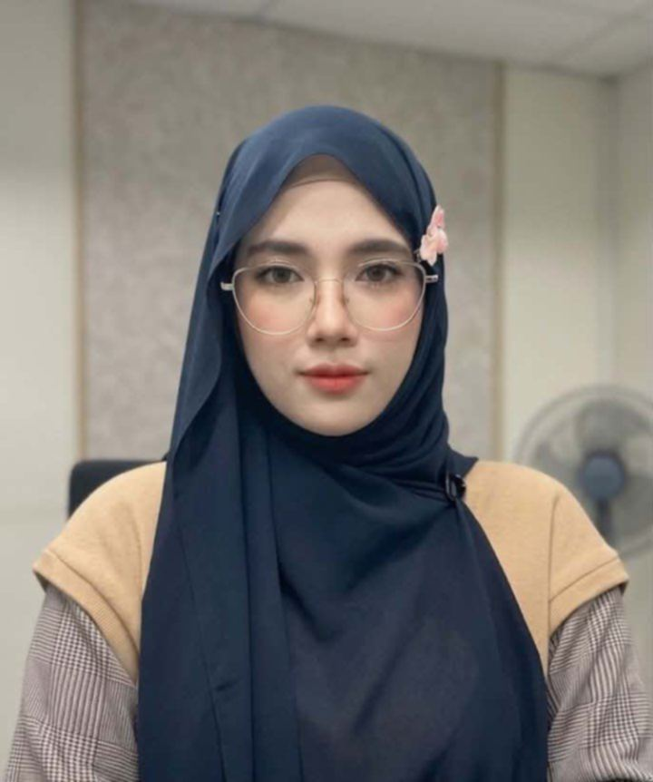
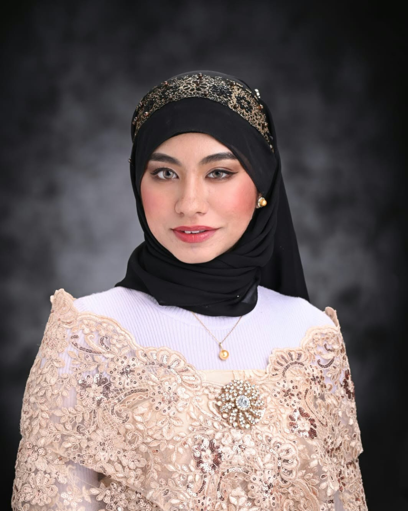
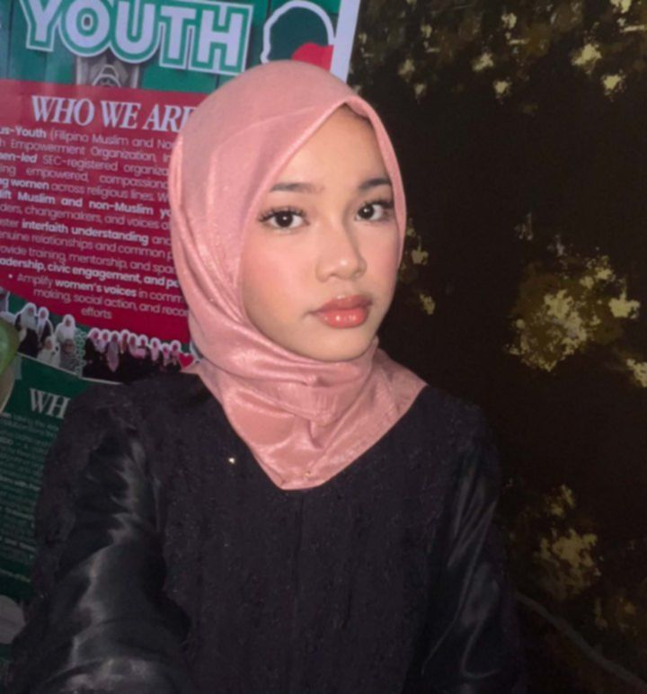
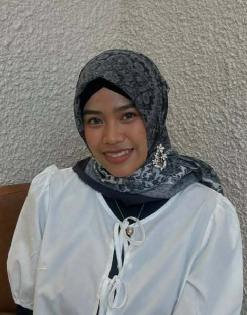
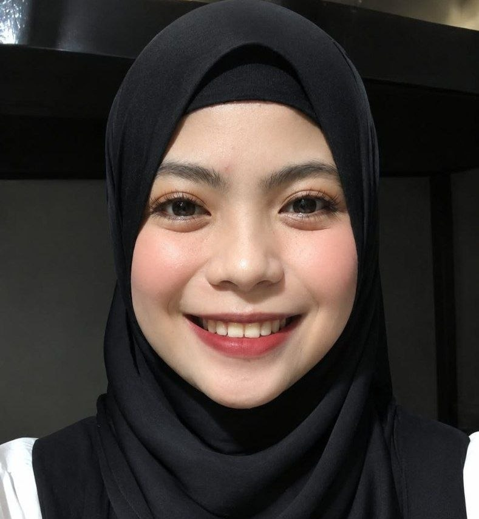
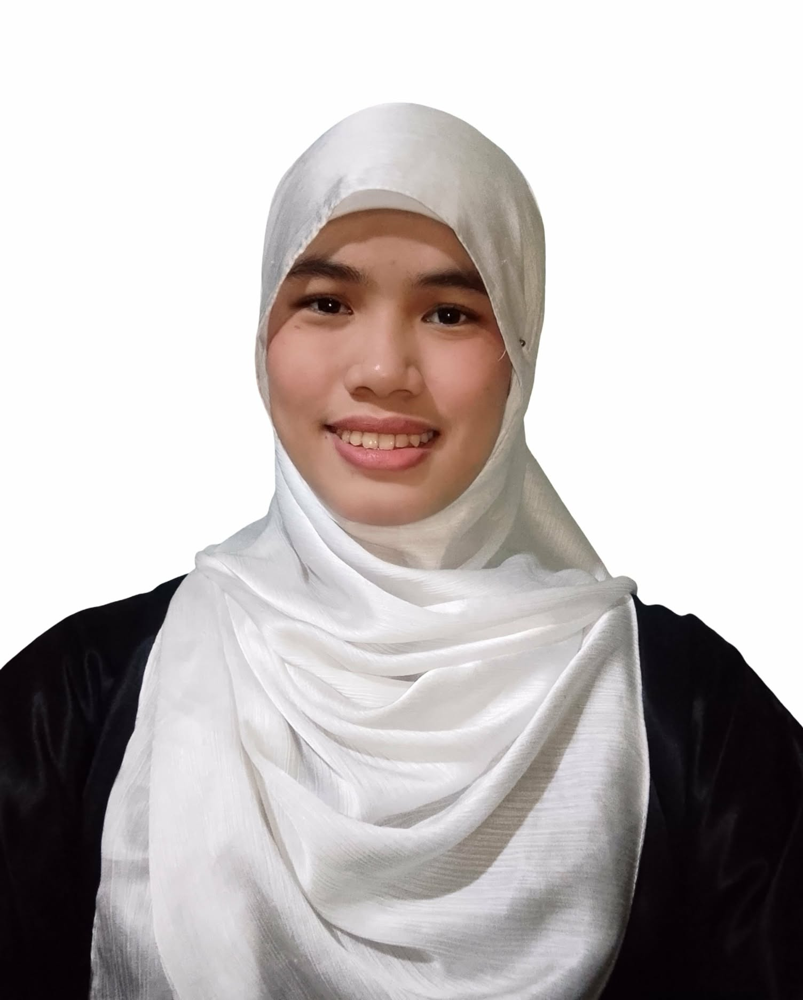

FILMUS Youth is a youth-led organization empowering young women to become socially responsible leaders through volunteerism, leadership development, peacebuilding, and community-based action.
We create spaces where young women can build confidence, use their voices, learn leadership by doing, and turn community needs into meaningful action.
A glimpse into the sisterhood, service, and empowerment that define FILMUS Youth.

Empowering young women through skills training.

Serving communities with compassion and care.

Creating safe spaces where women connect, uplift one another, and grow together.

Promoting understanding, dialogue, and unity across communities.

Young leaders taking ownership of change.

Impact-focused initiatives that create lasting change.

A milestone made possible by the dedication, service, and sisterhood of FILMUS Youth.
Gawad Pingkian 2026 | Natatanging NGO para sa Kabataan

A glimpse of the teamwork and sisterhood behind every initiative and gathering.
FILMUS Youth is a youth-led, all-female organization empowering young women through sisterhood, service, and meaningful community action.
FILMUS Youth empowers young women to become socially responsible leaders through volunteerism, leadership development, and community‑based initiatives that create measurable and lasting impact.
We envision a world where young women are equipped, confident, and actively leading positive change in their communities and beyond.
The principles that guide everything we do — from how we lead, to how we serve, to how we grow together.
We believe in building confidence, voice, and leadership among young women.
We serve with intention — prioritizing real impact over recognition.
We foster safe, supportive spaces where women uplift and protect one another.
We encourage young women to lead, act, and take ownership of change.
We recognize our role in addressing community needs with empathy and accountability.
Our work is grounded in volunteerism, youth leadership, women's empowerment, peace, inclusion, and community service.
Safe spaces, leadership development, public speaking, teamwork, and opportunities for young women to lead.
Youth-centered initiatives for conflict transformation, inclusive leadership, peace education, and community resilience.
Community-based activities responding to real needs through feeding, relief, education, and outreach.
Creating pathways for young people to participate meaningfully in conversations, initiatives, and civic action.
Connecting Muslim and non-Muslim young women through a supportive, respectful, and empowering community.
Collaborating with schools, communities, civil society groups, and partners who share our commitment to positive change.
Selected milestones from FILMUS Youth's work and engagements.
Growing from our Quezon City home chapter toward Cotabato, General Santos, Davao, and BARMM-wide coverage.
Community feeding and outreach across Metro Manila and partner communities including SGA-BARMM, Maguindanao del Norte, Lanao del Sur, Sultan Kudarat, and Davao del Norte.
Received GAWAD PINGKIAN — Natatanging NGO para sa Kabataan and GAWAD MARANGAL NA PAGLILINGKOD, with support for future seminars and feeding programs.
Participation in peacebuilding, young women's dialogue, youth leadership, and community initiatives with partners and networks.
A youth-led, all-female organization began building spaces where young women can lead, serve, and create positive change.
FILMUS Youth is officer-led, with the President providing organizational leadership and final direction.
President / Co-Founder

VP Internal

VP External
Organizational records and coordination

Records support and coordination

Financial stewardship

Financial accountability
Monitoring and evaluation

Communications and public relations

Communications support
FILMUS Youth has engaged with youth, peacebuilding, women's dialogue, education, and community-service partners.
Peacefied Fair 2025 Manila Hub • Sanctuary Network Philippines Young Women's Dialogue Network • KRIS Champions for Peace • Oman Harmonious Connection / Message of Peace for Young Leaders • TJR/GPH-MILF-related youth engagement • RAHMA Youth Grand Iftar • SAIA • Salimbago Fellowship.
Project REDO — Reframing & Empowering Youth for Conflict Transformation and Peace Leadership.
Project Sindaw (Light) — "Young Women Reclaiming Narratives for Peace," a proposed young women's peacebuilding initiative in Maguindanao del Norte.
FILMUS Youth is an all-female youth organization for young women, with members generally aged 14–30. Membership and chapter opportunities can be confirmed through the organization's official channels.
No. FILMUS Youth welcomes young Muslim and non-Muslim women who share its commitment to empowerment, service, inclusion, peace, and positive community action.
FILMUS Youth is the public name of Filipino Muslim and Non-Muslim Women Youth Empowerment Organization Inc.
The organization is based in the Philippines, with a QC home-chapter direction and activities that connect communities across Metro Manila and Mindanao. Future chapter development may include Cotabato, General Santos, Davao, and BARMM-wide coverage.
We welcome collaboration, sponsorship, training, community-service, youth leadership, peacebuilding, and education opportunities. Use our official Facebook, Instagram, or email to start a conversation about partnership, sponsorship, or donations.
Yes. FILMUS Youth is open to mission-aligned sponsors and partners who want to support measurable youth, women's empowerment, peacebuilding, and community-service initiatives.
Follow the organization's official social media pages for calls for volunteers, events, campaigns, and membership opportunities.
Whether you are a young woman looking for a community, a volunteer ready to serve, a donor, or an organization interested in partnership, we'd love to hear from you.
Membership Application